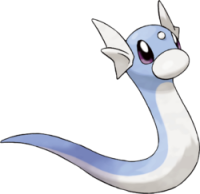

Recherche
Draco - 148
Nom Anglais : Dragonair
Nom Original : Hakuryu, ハクリュ
Génération : Première
Type : Dragon
Catégorie : Pokémon Dragon
Sexe : Femelle : 50% | Mâle : 50%
Description : Draco est un long dragon sans membre, pouvant faire penser à un serpent de mer. Sa tête et son dos sont bleus, tandis que son ventre est blanc. Il possède deux petites sphères bleues au bout de la queue, on en retrouve une troisième au niveau de sa gorge. Il possède une petite corne blanche sur son front, ainsi que deux courtes ailes en guise d'oreilles.
Minidraco - 147
Draco - 148